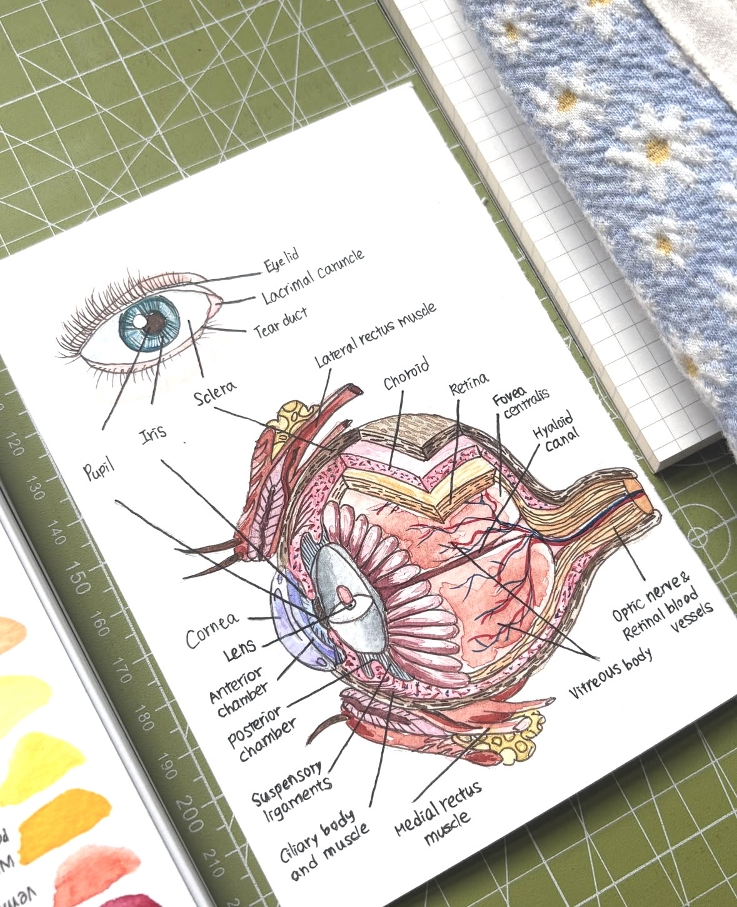
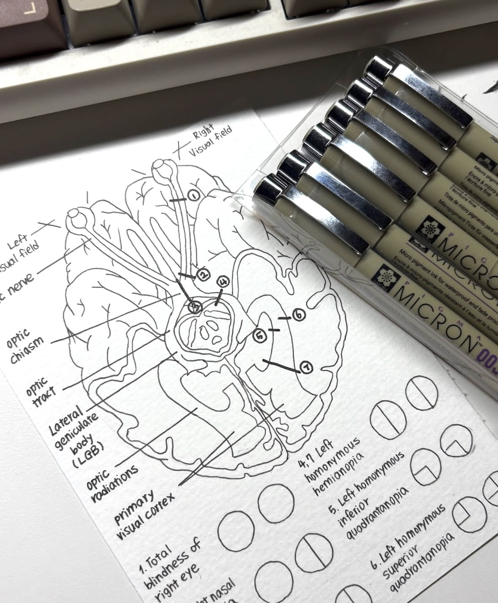
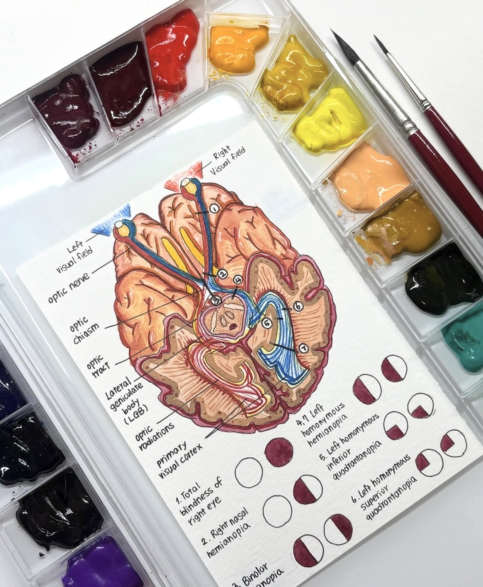

A few drawings from my sketchbook, alongside pieces of life outside the lab.
Having something to be absorbed in is a kind of luck!



I also keep a record of life outside the lab, and share pieces of it along the way.